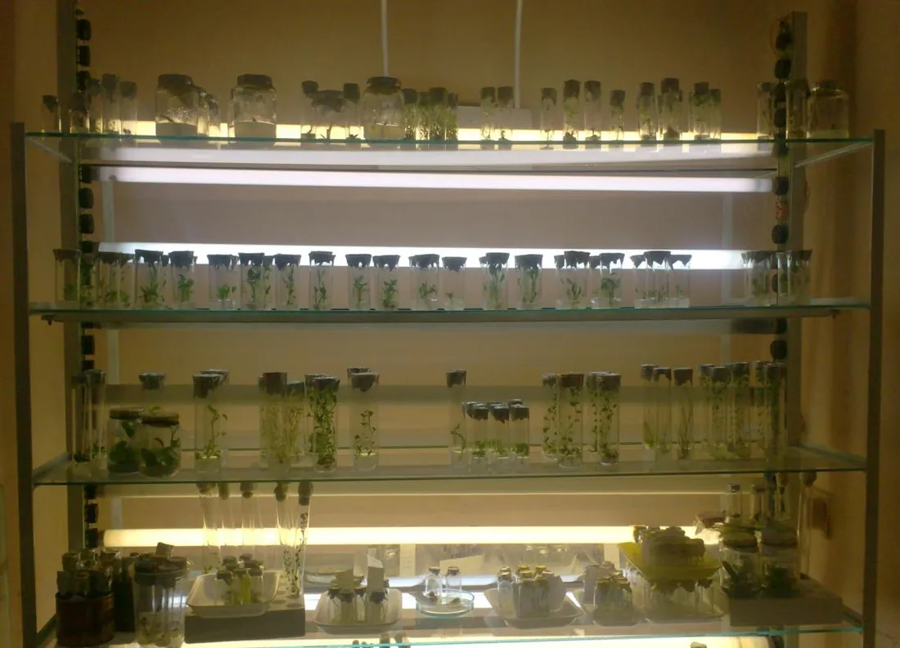
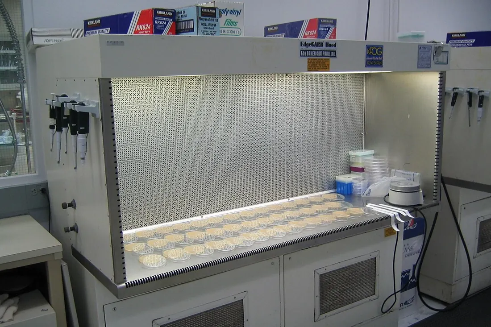
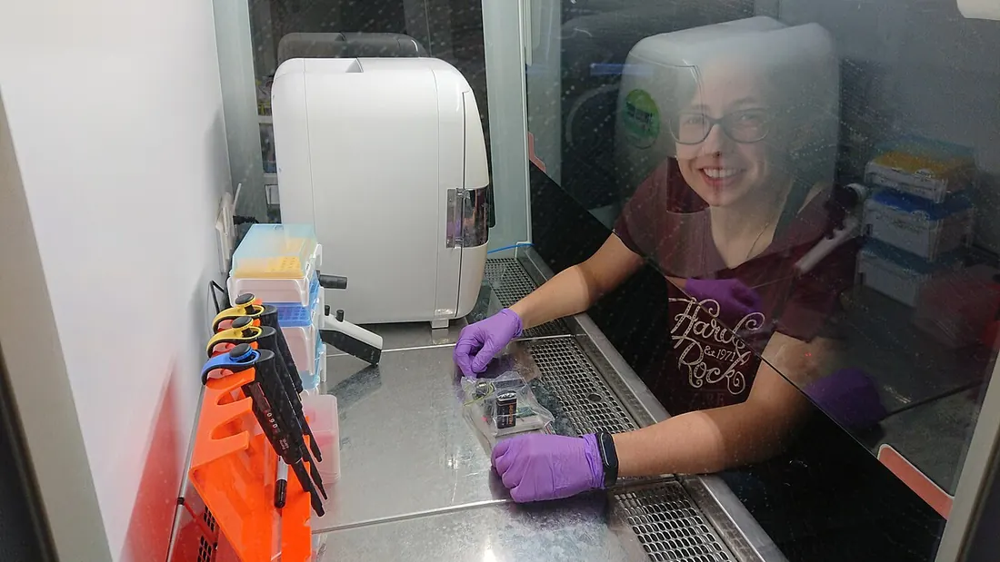
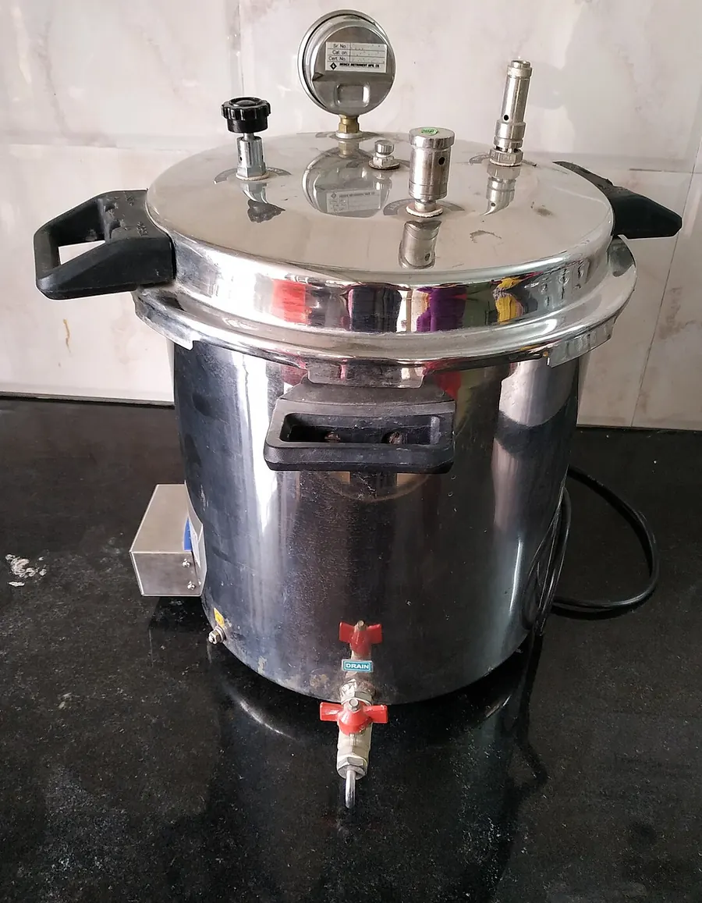
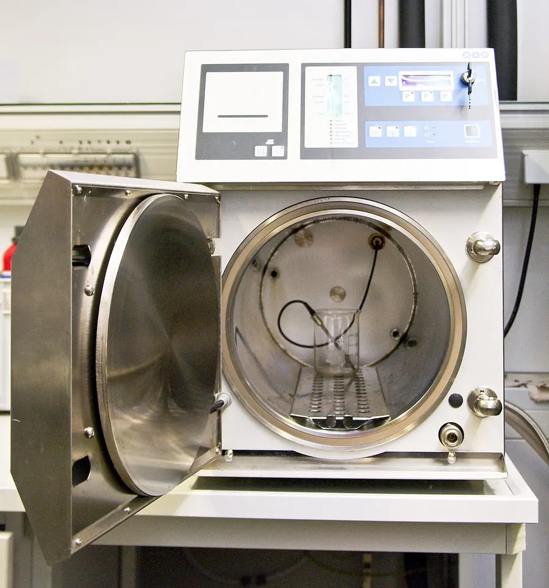
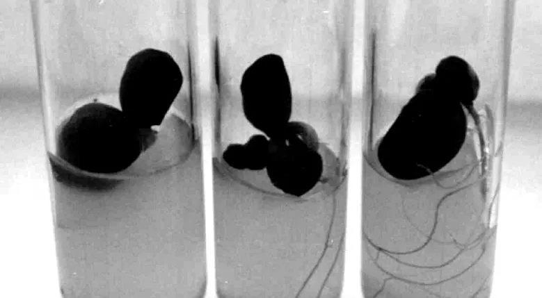
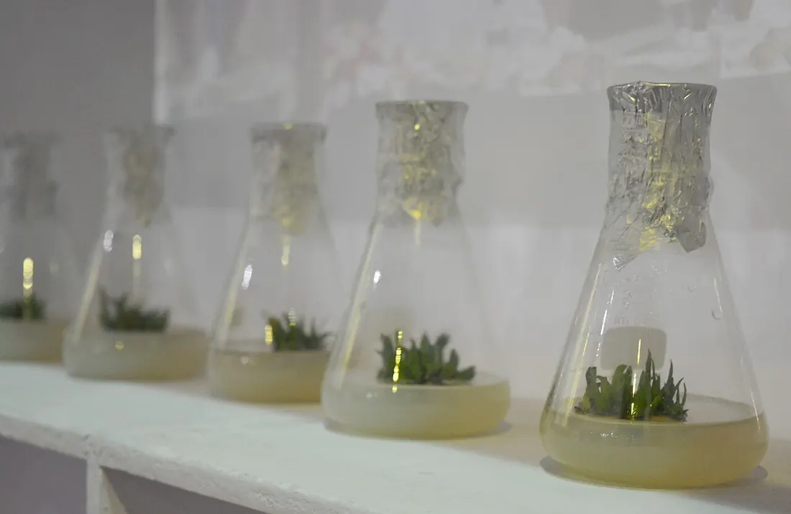
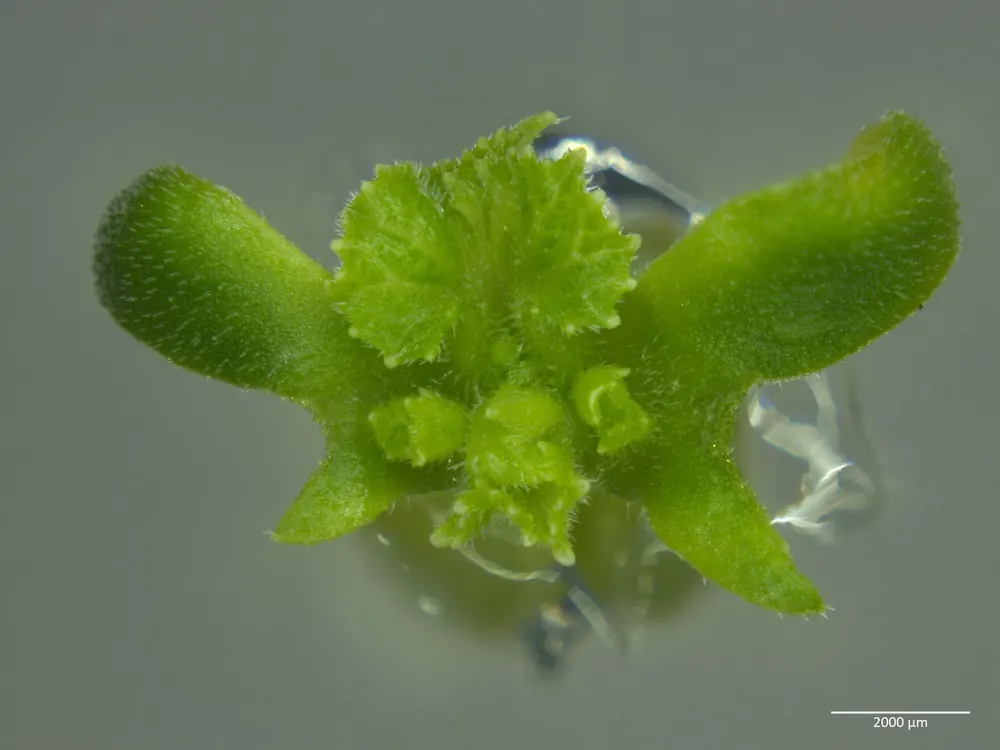

01Мета і план
Мета
Опанувати три основні принципи культури ізольованих клітин і тканин in vitro (у склі, поза організмом): ізолювання експлантата, контрольовані умови й стерильність. Навчитися стерилізувати бокс, посуд, середовища й рослинний матеріал, готувати маточні розчини і середовище Мурасіге — Скуга (МС), вводити в культуру насіння сої, моркву й картоплю та досліджувати фізіологічну полярність.
Знадобиться
- ламінар-бокс, автоклав, сушильна шафа, термостат;
- аналітичні ваги, рН-метр, магнітна мішалка, мірні колби й циліндри, пляшки з темного скла;
- фільтр Зейтца, колба Бунзена, водоструминний насос або насос Камовського, мембрани 0,22 мкм;
- солі МС, сахароза, агар, етанол 70 % і 96 %, «Білизна» (гіпохлорит натрію), насіння сої, коренеплоди моркви, бульби картоплі.
Ви навчитеся
- обирати режим автоклавування за об'ємом середовища (табл. 2) і пояснювати його через прогрів і загибель спор;
- розраховувати наважки маточних розчинів будь-якої кратності й об'єми маточників для середовища;
- знаходити компроміс «контамінація ↔ некроз» під час стерилізації експлантатів;
- планувати дослід із полярністю й рахувати частоту калюсоутворення.
02Теоретичні відомості
Культура клітин і тканин — це вирощування in vitro ізольованих клітин, шматочків тканин і органів на штучних живильних середовищах за контрольованих умов. Звільнена від кореляційних зв'язків (взаємного впливу органів) материнської рослини клітина показує свої приховані можливості: ділиться, утворює калюс (неорганізовану масу клітин, що діляться), регенерує органи й цілу рослину. Майже всі методичні прийоми тримаються на трьох принципах: (1) ізолювання експлантата (клітини, шматочка тканини чи органа, перенесеного в культуру); (2) розміщення його в ретельно підібрані контрольовані умови; (3) суворе дотримання стерильності. Рослинні клітини діляться в десятки разів повільніше за бактерії й гриби, а живильне середовище з сахарозою — ідеальна їжа для мікробів: одна спора, що потрапила в колбу, за кілька діб «з'їдає» всю культуру. Тому половина цієї теми — про стерилізацію.
Усі формули нижче «оживають» в інтерактивних моделях: автоклав, маточні розчини, фільтр 0,22 мкм, стерилізація експлантатів, полярність.
Біотехнологічна лабораторія
Лабораторія культури тканин складається з окремих приміщень: мийної (кислотостійкі мийки, дистилятор), кімнати для приготування середовищ (аналітичні й торсійні ваги, рН-метр, бідистилятор, холодильники), стерилізаційної (вертикальні або горизонтальні автоклави — апарати для стерилізації насиченою парою під тиском, і сушильні шафи на 160–180 °C), асептичної (операційної) кімнати з ламінар-боксами та культуральних кімнат. Ламінар-бокс — робоча камера, у яку вентилятор подає повітря через стерилізуючі HEPA-фільтри (високоефективні фільтри затримання частинок); надлишковий тиск і рівний («ламінарний») потік не пускають усередину неочищене повітря. У світловій культуральній кімнаті автоматично підтримують температуру 25–26 °C, вологість повітря 70–80 %, 14-годинний фотоперіод і освітленість 1000–10 000 лк у діапазоні 400–700 нм; у темновій — ті самі температуру й вологість, там вирощують калюси й клітинні суспензії на шейкерах.






Стерилізація: агенти й режими (ЛР 1)
Стерилізація — повна інактивація здатності до розмноження всіх форм мікроорганізмів, включно зі спорами (стійкими до нагрівання «сплячими» клітинами бактерій і грибів). Стерилізуючі агенти денатурують ферменти (руйнують просторову будову білків, див. Конспект: ферменти) та пошкоджують геном. Їх чотири групи: тепло — насичена пара (автоклавування), тиндалізація (дробне нагрівання), кип'ятіння, пастеризація; гаряче повітря у сушильних шафах (+120…180 °C); токсичні хімічні сполуки; іонізуюче випромінювання, головно γ-промені. Ультрафіолет (УФ) діє лише на відкриті поверхні й не проникає в тінь, тому «не завжди є ефективним».
| Що стерилізують | Як | Режим за посібником (с. 50–52) |
|---|---|---|
| Приміщення (асептична кімната) | миття підлоги з мийним засобом, УФ-лампи ПРК-7 (1000 Вт) або ПРК-4 (500 Вт) | 1,5–2 год; заходити через 2 год після вимкнення ламп |
| Ламінар-бокс | УФ-лампи бокса, перед роботою — протирання 96 % етанолом | УФ можна лишати на ніч |
| Руки | миття з милом, потім 96 % етанол | — |
| Інструменти (ножиці, ланцети, пінцети, голки) | сушильна шафа; перед роботою — 96 % етанол і полум'я спиртівки | 160–180 °C, 2–3 год; обпалювати перед кожною маніпуляцією |
| Скляний посуд | хромова суміш 4–6 год (K₂Cr₂O₇ у концентрованій H₂SO₄) або мийний засіб; сушильна шафа або автоклав у пергаменті | 160–180 °C, 2–2,5 год або 20–25 хв при 1–1,2 атм |
| Вата, марля, пробки, фольга, папір | автоклав | 25 хв при 1–1,2 атм |
| Живильні середовища | автоклав; термолабільні компоненти — мембранні фільтри | 121 °C, 1 атм; час — за об'ємом (табл. 2) |
| Інфіковані культури перед миттям | автоклав | 50–60 хв при 2 атм |




Автоклавування: чому час залежить від об'єму
В автоклаві воду нагрівають у герметичній камері; спочатку через відкритий клапан парою витісняють повітря, потім закривають клапан і тиск зростає. Надлишковий тиск (те, що показує манометр понад атмосферний) 1 атм відповідає абсолютному тиску ≈ 2 атм, за якого вода кипить при ≈ 121 °C. Зв'язок температури насиченої пари з тиском описує рівняння Антуана:
де P — абсолютний тиск пари, мм рт. ст.; T — температура, °C (вода, 99–374 °C). При P = 2 атм = 1520 мм рт. ст. маємо T = 120,7 °C. Якщо повітря з камери не видалити (половина лишилась), за тим самим манометром пара має лише ≈ 1,5 атм і ≈ 112 °C — стерилізація не вдається.
Стерилізує не температура пари, а температура в центрі посудини. Рідина прогрівається з запізненням тим більшим, що більший її об'єм; за законом Ньютона
де Tк — температура в камері; τ — стала часу прогріву, хв; V — об'єм середовища, мл (від 4,8 хв для 35 мл до 10,6 хв для 2 л).
Спори гинуть за кінетикою першого порядку: кожні D хвилин при 121 °C кількість живих спор зменшується в 10 разів (D-значення); підвищення температури на z градусів прискорює загибель у 10 разів (z-значення). Сумарну «смертоносність» циклу виражають летальністю F — кількістю еквівалентних хвилин при 121 °C:
Для еталонного тест-мікроорганізму Geobacillus stearothermophilus D121 ≈ 1,5 хв, z = 10 °C. N0 у моделі — 10 спор на мл нестерильного середовища (спори приносять агар, сахароза, вода). Імовірність, що в посудині лишилась жива спора, — 1 − e−N.
| Об'єм середовища, мл | Час за посібником, хв | τ прогріву, хв | Летальність F, хв | lg N після циклу | Мінімум за моделлю, хв |
|---|---|---|---|---|---|
| 20–50 | 15 | 4,8 | 8,5 | −3,1 | 14,7 |
| 75 | 20 | 5,6 | 10,9 | −4,4 | 17,4 |
| 150–500 | 25 | 7,3 | 11,0 | −3,8 | 23,3 |
| 1000 | 30 | 9,2 | 10,6 | −3,0 | 29,9 |
| 2000 | 40 | 10,6 | 15,3 | −5,9 | 34,3 |
Сталу τ(V) підібрано як найповільніший прогрів, за якого кожен режим табл. 2 (з урахуванням 9 хв нагріву води, набору тиску й повільного скидання) ще знижує кількість спор до lg N ≤ −3, тобто імовірність нестерильності посудини ≤ 0,1 %. Модельний мінімум витримки (останній стовпчик) на 0–6 хв коротший за табличний — посібник дає запас, найбільший для 2 л. Це наближення: реальне запізнення прогріву залежить від форми посуду й завантаження автоклава, тому в практиці його перевіряють біологічними індикаторами (ампулами зі спорами). Після стерилізації тиск знижують повільно й відкривають кришку, лише коли стрілка манометра на «0»: за різкого скидання перегріта рідина скипає, змочує й навіть виштовхує пробки (с. 58). Надмірне прогрівання теж шкодить: сахароза карамелізується, агар у кислому середовищі гідролізується й погано застигає, руйнуються вітаміни. Модель автоклава →
Стерилізація рослинного матеріалу (ЛР 1, 5, 6)
Отримати асептичний (вільний від мікроорганізмів) рослинний матеріал складно: треба знищити мікрофлору на поверхні, не вбивши саму тканину. Для цього беруть стерилянти — речовини, що не проникають глибоко в тканину й легко змиваються водою. Спершу матеріал занурюють у 70 % етанол (насіння на 2–3 хв, листки й корені на 0,5–1 хв): спирт розчиняє восковий наліт, витісняє бульбашки повітря й убиває вегетативні клітини. Далі — основний стерилянт:
- препарати активного хлору: 0,5–5 % гіпохлорит натрію NaClO, 9 % гіпохлорит кальцію Ca(ClO)₂, хлорамін, комерційна «Білизна» (окисники, що руйнують білки й мембрани, див. Конспект: окисний стрес);
- ртутні препарати: 0,2–0,5 % сулема HgCl₂, діоцид — дуже ефективні, але отруйні;
- 5–20 % пероксид водню H₂O₂; 1 % бромна вода; 0,5–2 % нітрат срібла AgNO₃.
Для кращого змочування додають твін-80 (поверхнево-активну речовину, емульгатор) — 1 краплю на 100 мл. Після стерилянту експлантати чотири рази по 15 хв промивають стерильною водою: недовідмитий стерилянт отруює культуру, гальмує ріст або вбиває її (с. 52). Для сильно зараженого матеріалу застосовують антибіотики, стерилізовані через мембранні фільтри: після відмивання експлантати 3 год тримають у розчині клафорану (цефотаксиму, 500 мг/л), а висаджують на середовище з 500 мг/л клафорану і 50 мг/л канаміцину. Клафоран діє на бактерії, але не на гриби.
Час стерилізації «визначається експериментально». Модель описує його як компроміс двох процесів. Загибель мікробів — закон Чіка — Вотсона (логарифм частки живих спадає пропорційно концентрації й часу), імовірність, що експлантат інфікується, — пуассонівська:
де C — концентрація стерилянту, %; t — час, хв; k — швидкість загибелі; n ≈ 1 для окисників. Частина мікробів захищена (рубчик насінини, тріщини, продихи) і гине в 4 рази повільніше — тому «хвіст» контамінації довгий.
Ушкодження тканини описує логістична крива «доза — ефект» за правилом Габера (ефект залежить від добутку концентрації на час):
де D50 — доза, що ушкоджує половину експлантатів; h — крутизна; tзал = 30·e−r·tпр/τ — «залишкова експозиція» недовідмитого стерилянту за r промивань по tпр хв. Показник 1,3 > 1: висока концентрація шкодить тканині сильніше, ніж прискорює загибель мікробів, тому краще слабший розчин довше. Числові коефіцієнти моделі — правдоподібні оцінки, підібрані під режими посібника (соя: «Білизна» 1 : 3, 15–20 хв), а не виміряні величини.
Ефективність стерилізації у табл. 4 посібника (с. 59) — частка неінфікованих і життєздатних (для насіння — схожих) експлантатів через 7 діб. Коренеплоди моркви й бульби картоплі стерилізують інакше (ЛР 6): внутрішні тканини здорового органа стерильні, тож досить знищити мікрофлору поверхні — вимити щіткою з милом, наколоти на ланцет, занурити в 96 % етанол і обпалити в полум'ї спиртівки, а потім пробковим свердлом вирізати з глибини циліндри тканини, відсікти обпалені кінці й нарізати диски. Інфікуються тоді переважно експлантати з ендофітами (мікробами, що живуть усередині тканин). Модель стерилізації експлантатів →


Живильні середовища (ЛР 4)
Живильне середовище — головний чинник успіху культури. За консистенцією воно буває рідким або твердим (агаризованим). Твердим його робить агар-агар — полісахарид із морських водоростей (0,6–0,8 %); желатина непридатна, бо токсична для рослинних тканин. До складу входять мінеральні солі (макроелементи — N, P, K, Ca, Mg, S у мілімолях на літр, і мікроелементи — B, Mn, Zn, Cu, Mo, Co, I у мікромолях), джерело вуглецю (сахароза або глюкоза, бо клітини in vitro майже не фотосинтезують), вітаміни, залізо в хелатній формі й регулятори росту — фітогормони (див. Конспект: ріст і фітогормони). Іноді додають комплексні добавки: гідролізат казеїну, дріжджовий екстракт, кокосове молоко. Середовища готують на дистильованій або бідистильованій воді.
- Мурасіге — Скуга (МС) — найуніверсальніше: багате на амонійний і нітратний азот (≈ 60 ммоль/л N), підтримує калюсний ріст і морфогенез більшості дводольних;
- Гамборга (В5) — мало амонію, багато тіаміну; для бобових і злаків;
- Уайта — бідне на солі; для укорінення пагонів;
- Нітча й китайські середовища — для андрогенезу в культурі пиляків; Као — Михайлюка — для протопластів і клітин за малої густини висіву.
| Компонент | МС | Гамборга | Уайта | Міллера* |
|---|---|---|---|---|
| NH₄NO₃ | 1650 | — | — | 1000 |
| KNO₃ | 1900 | 2500 | 80 | 1000 |
| CaCl₂·2H₂O | 440 | 150 | — | — |
| MgSO₄·7H₂O | 370 | 250 | 360 | 350 |
| KH₂PO₄ | 170 | — | — | 300 |
| NaH₂PO₄·H₂O | — | 150 | 16,5 | — |
| (NH₄)₂SO₄ | — | 134 | — | — |
| Ca(NO₃)₂ | — | — | 200 | 347 |
| KCl | — | — | 65 | 65 |
| Na₂SO₄ | — | — | 200 | — |
| H₃BO₃ | 6,2 | 3,0 | 1,5 | 1,6 |
| MnSO₄·4H₂O | 22,3 | 10,0 | 4,5 | 4,4 |
| ZnSO₄·7H₂O | 8,6 | 2,0 | 1,5 | 1,5 |
| CuSO₄·5H₂O | 0,025 | 0,025 | — | — |
| Na₂MoO₄·2H₂O | 0,25 | 0,25 | — | — |
| KI | 0,83 | 0,75 | 0,75 | 0,8 |
| CoCl₂·6H₂O | 0,025 | 0,025 | — | — |
| FeSO₄·7H₂O / Na₂ЕДТА·2H₂O | 27,8 / 37,3 | 27,8 / 37,3 | 27,8 / 37,3 | 17,8 / 37,2 |
| Тіамін (B₁) / піридоксин (B₆) / нікотинова к-та (PP) | 0,1 / 0,5 / 0,5 | 10 / 1 / 1 | 0,1 / 0,1 / 0,5 | — |
| Сахароза, г/л | 30 | 20 | 20 | — |
| Агар, % | 0,8 | 0,8 | 0,8 | — |
| pH | 5,6–5,8 | 5,5 | 5,6–5,8 | 5,6–5,8 |
У заголовку табл. 3 посібника одиниці вказано як «г/л», але числа для солей — це мг/л робочого середовища (так у Мурасіге і Скуга, 1962). *Для середовища Міллера в посібнику надруковано NH₄NO₃ і KNO₃ по 10 000, KH₂PO₄ 3000, Ca(NO₃)₂ 3470, KCl 650, H₃BO₃ 16,0, MnSO₄ 44,0, ZnSO₄ 15,0 — це в 10 разів більше за звичайні робочі концентрації (вочевидь, значення для маточника 10×), тому тут їх поділено на 10; решту наведено як у посібнику. ЕДТА — етилендіамінтетраоцтова кислота, що утримує залізо в розчинній (хелатній) формі.
Маточні розчини (ЛР 2)
Зважувати 0,025 мг сульфату міді на кожен літр середовища неможливо, тож готують маточні розчини (концентрати) у k разів міцніші за робочу концентрацію (k — кратність). Кожну сіль зважують і розчиняють окремо в новій порції води, потім зливають і доводять до мітки мірної колби. Наважка солі на маточник і об'єм маточника для середовища:
де c — концентрація солі в середовищі, мг/л; Vм — об'єм маточника, л; Vс — об'єм середовища; s — частка повного складу (1 — МС, 0,5 — ½ МС). Приклад: KNO₃ для макросолей 10× на 1 л: 1900 · 10 · 1 = 19 000 мг = 19,0 г; на 1 л середовища беруть 100 мл маточника.
- Макросолі — 10× (с. 56), зберігають при +4 °C до 6 місяців. Кальцій із сульфатом і фосфатом у концентраті схильні випадати в осад (гіпс CaSO₄), тому CaCl₂ розчиняють окремо й додають останнім.
- Мікросолі — 100× (с. 56), у темному склі при +4 °C до 6 місяців; молібдат натрію розчиняють окремо. Проте прописи ЛР 5 і ЛР 6 беруть лише 0,5–1 мл мікросолей на 1 л — така кількість відповідає маточнику 1000×. Із маточником 100× треба 10 мл/л — модель показує цю розбіжність.
- Fe-хелат: 557 мг FeSO₄·7H₂O і 745 мг Na₂ЕДТА·2H₂O на 100 мл (с. 53; у посібнику помилково «FeSO₄·4H₂O») — це 200× робочих 27,8 і 37,3 мг/л; 5 мл на 1 л. Наважки розчиняють окремо в бідистиляті, зливають і доводять до кипіння, щоб утворився хелат.
- Фітогормони — 1 мг/мл: ауксини (2,4-Д — 2,4-дихлорфеноксиоцтова кислота, ІОК — індоліл-3-оцтова, ІМК — індоліл-3-масляна, НОК — нафтилоцтова кислота, піклорам) розчиняють 100 мг у 0,5–2 мл етанолу; цитокініни (кінетин, зеатин, 6-БАП — 6-бензиламінопурин) — у 2 мл 0,5 н HCl; обидва підігрівають і доводять водою до 100 мл. Гіберелова кислота (ГК₃): 100 мг у 100 мл води — це 1 мг/мл (у посібнику помилково «100 мг/л»). Абсцизову кислоту (АБК) розчиняють у 3 мл 70 % етанолу.
- Вітаміни (тіамін B₁, піридоксин B₆, нікотинова кислота PP та ін.) — 1 або 0,1 мг/мл у воді; заморожують невеликими порціями при −18 °C.
Порядок приготування середовища (с. 57–58): агар заливають половиною об'єму води, 20 хв дають набухнути й нагрівають до 80–100 °C; у циліндр наливають 100–150 мл води, додають маточники, сахарозу та інші компоненти, потім розплавлений агар; доводять до об'єму, встановлюють рН 5,6–5,8 розчином 1 н KOH, розливають тепле середовище в колби чи пробірки на ½–⅔ об'єму, закривають фольгою або ватними пробками і автоклавують 20–25 хв при 1 атм. Термолабільні компоненти стерилізують фільтруванням і вносять в охолоджене до 45–50 °C середовище. Конструктор маточних розчинів →




Холодна стерилізація фільтруванням (ЛР 3)
Термолабільні (ті, що руйнуються при нагріванні) речовини — амінокислоти, вітаміни, антибіотики, ферменти, деякі регулятори росту, рослинні екстракти — стерилізують холодним способом: пропускають через бактеріальні фільтри (Зейтца, Беркефельда, свічі Шамберлана, мембранні фільтри). Мембрана з порами 0,22 мкм затримує бактерії й спори грибів, а молекули проходять. Так готують ферментні суміші для виділення протопластів, середовища з біологічно активними добавками й рідкі середовища.
Фільтр Зейтца — металевий корпус із двох частин. У нижню кладуть сітку, гумове кільце, диск фільтрувального паперу, мембрану (матовою стороною до сітки), ще один диск паперу й гумове кільце, нагвинчують верхню частину не до упору, вставляють через гумову пробку в колбу Бунзена (товстостінну колбу з бічним відростком), загортають у папір і автоклавують 30 хв при 1 атм. Потім гвинти затягують, стики заливають парафіном і фільтрують середовище під вакуумом. Швидкість фільтрування описує закон Дарсі:
де Q — потік фільтрату, мл/хв; ΔP — розрідження; μ — в'язкість середовища; Rм, Rп — опори мембрани й паперу; αV — опір осаду, що накопичується з об'ємом V; d — діаметр пор. Надійність затримання виражають логарифмічною редукцією LRV = lg(Nдо/Nпісля): стерилізуючою вважають мембрану з LRV ≥ 7 для дрібної бактерії Brevundimonas diminuta (≈ 0,3 мкм).
Краплини фільтрату мають скапувати повільно; струмінь означає, що мембрана пошкоджена. Після фільтрування повітря в колбу впускають повільно, інакше ватний тампон із трубки засмокче всередину й фільтрат буде інфіковано. Далі в ламінар-боксі над полум'ям від'єднують фільтр, обпалюють горло колби й переливають фільтрат у стерильну колбу. Модель фільтрування →
Фізіологічна полярність (ЛР 7)
Полярність — фізіологічна нерівноцінність протилежних полюсів клітини, органа чи цілої рослини. Вона виникла через нерівномірну дію середовища на різні частини рослини й найяскравіше видна під час укорінення живців (відрізків пагона): на верхньому, апікальному кінці розвиваються бруньки, а на нижньому, базальному, — корені, незалежно від того, як живець розміщено в просторі. В основі — полярний транспорт ауксину ІОК: білки-переносники PIN стоять на «нижньому» боці клітин і перекачують гормон в одному напрямку — у стеблі від верхівки до основи (базипетально), у центральному циліндрі кореня — до його кінчика (акропетально). В обох випадках ауксин рухається «до кореня» й накопичується там, де він індукує поділ клітин, калюс і корені (див. Конспект: ауксини й ріст).
Калюс тому утворюється інтенсивніше на боці експлантата, який у рослині був обернений до кореня. Тож фрагменти стебла й шматочки кореня моркви кладуть на середовище апікальною стороною (у кореня вона звернена до кінчика, тобто «до кореня»). У бульб (топінамбур, картопля) полярність несуттєва; щоб повністю її виключити, диски бульб кладуть тангентально (боком). Великі експлантати орієнтують обов'язково, у малих полярність виражена слабше. Стаціонарний профіль ауксину вздовж експлантата товщиною L, якщо транспорт зі швидкістю v конкурує з дифузією (коефіцієнт D):
де x = 0…1 — положення від грані «до пагона» до грані «до кореня»; a — рівень ауксину відносно середнього; Pe — число Пекле (відношення переносу до дифузії). Відношення рівнів на гранях дорівнює ePe: що тонший диск, то менше Pe і слабша полярність. Частоту калюсоутворення рахують як відсоток експлантатів із калюсом від усіх висаджених (через 5–6 тижнів). Кількісні параметри моделі — оцінки для навчання. Модель полярності →
Фрагмент тканини чи органа, перенесений із рослини на живильне середовище.
Сукупність прийомів, що не допускають мікроорганізмів до стерильного матеріалу.
Зараження культури бактеріями чи грибами; систематична (помилка методики) або випадкова.
Час десятикратного зменшення кількості спор при 121 °C і приріст температури, що прискорює загибель у 10 разів.
Концентрат групи компонентів середовища в k разів міцніший за робочий.
Комплекс металу з органічною молекулою (Fe з ЕДТА), що не дає залізу випасти в осад.
Той, що руйнується при нагріванні (вітаміни, ферменти, антибіотики, ГК₃).
Мікроорганізми, що живуть усередині тканин рослини й не знищуються поверхневою стерилізацією.
Нерівноцінність апікального й базального полюсів клітини, органа чи рослини.
03Інтерактивна модель
П'ять моделей відповідають етапам теми. Оберіть вкладку, задайте параметри (статичний кадр і графіки одразу перераховуються) і натисніть «▶ Запустити», щоб пройти процес у прискореному часі. Пояснення формул — у теоретичних відомостях.
Автоклав у розрізі: прогрів середовища й загибель спор
Об'єм × тиск × час → температура в центрі посудини, летальність F, кількість живих спор
Посуд із середовищем
Режим
Сценарії
Температура в камері й у центрі посудини
Живі спори в посудині (lg N)
Час витримки від об'єму: табл. 2 і модель
Тиск — надлишковий, як на манометрі (1 кгс/см² ≈ 1 атм). Термокарта в посудині: синій — холодно, жовтий — ≈ 100 °C, червоний — ≈ 121 °C. Поле зору — фазовий контраст (метод мікроскопії, у якому живі спори яскраві й світлозаломлювальні, загиблі — темні). «Термічне навантаження» — наближений показник руйнування сахарози, агару й вітамінів (C-значення з z = 25 °C) відносно режиму табл. 2. Формули: (1)–(3).
Конструктор маточних розчинів МС і пропису середовища
Кратність × об'єм → наважки, похибка зважування, ризик осаду; перевірка прописів ЛР 5–6
Маточник
Середовище з маточників
Наважки для маточника
Перевірка пропису: скільки маточника взяти
Ризик осаду гіпсу в маточнику макросолей
Похибка найменшої наважки
Робочі концентрації — табл. 3 посібника; молярні маси — для вказаних кристалогідратів (·nH₂O — молекули кристалізаційної води, які входять у масу наважки). Індекс насичення SI = lg(добуток активностей іонів / добуток розчинності): SI > 0 — розчин пересичений, можливий осад; активності оцінено рівнянням Девіса без урахування іонних пар, тож оцінка «з запасом». Формула наважки — (6).
Холодна стерилізація: фільтр Зейтца на колбі Бунзена
Пори × вакуум × цілісність мембрани → швидкість крапель, затримання мікробів, стерильність фільтрату
Мембрана
Фільтрування
Об'єм фільтрату від часу
Затримання частинок мембраною (LRV)
LRV (log reduction value) — логарифмічна редукція: LRV = 7 означає, що крізь мембрану пройшла одна клітина з 10 мільйонів. Мікоплазми (бактерії без клітинної стінки, 0,1–0,3 мкм) і віруси частково проходять навіть 0,22 мкм. Формула потоку — (7); затримання LRV = 12·(s/d − 0,45) — наближення, що відтворює стандарт стерилізуючого фільтра.
Поверхнева стерилізація експлантатів: контамінація ↔ некроз
Стерилянт × концентрація × час × промивання → скільки чистих живих експлантатів через тиждень
Об'єкт
Стерилянт
Режим
Компроміс: інфекція, некроз і вихід чистих живих експлантатів
Карта ефективності (зелене — краще; ● ваш режим)
- < 20 %
- 40 %
- 65 %
- 80 %
- 100 %
Табл. 4 (с. 59): результати ваших дослідів
Кремові слизові ореоли — бактеріальна контамінація; пухнастий білий наліт зі зеленуватим чи чорним спороношенням — гриби (пліснява). Буріють некротизовані (загиблі через отруєння стерилянтом) експлантати. Кожен експлантат має власне «випадкове» число, тому при зміні режиму результат змінюється послідовно. Формули: (4)–(5).
Фізіологічна полярність: калюс на дисках і корені на живцях
Тканина × товщина × орієнтація → профіль ауксину й частота калюсоутворення
Об'єкт
Дослід
Профіль ауксину вздовж осі експлантата
Частота калюсоутворення (укорінення) у двох варіантах
Апікальну грань диска моркви позначає гладкий зріз, базальну — надірваний (с. 61). Калюс — кремові горбки; у варіанті А він росте з грані на агарі й виступає валиком по краю диска. Частота калюсоутворення = (дисків із калюсом / усіх висаджених) · 100 %. Формула профілю — (8).
04Хід лабораторних робіт
Робота 1. Методи стерилізації ламінар-боксу, посуду, живильних середовищ і рослинного матеріалу с. 49–52
- Вимийте підлогу асептичної кімнати мийним засобом, увімкніть УФ-лампи ПРК-7 або ПРК-4 на 1,5–2 год; заходьте не раніше ніж через 2 год після вимкнення.
- Увімкніть УФ-лампу ламінар-бокса (можна на ніч); перед роботою протріть робочу поверхню, розетки й пальники ватою з 96 % етанолом; вимийте руки з милом і обробіть 96 % етанолом.
- Інструменти прожарте в сушильній шафі 2–3 год при 160–180 °C; перед кожною маніпуляцією занурюйте в 96 % етанол, обпалюйте над спиртівкою й кладіть на підставку охолонути.
- Посуд вимийте (кислотний або лужний спосіб), ополосніть дистильованою й бідистильованою водою, висушіть і стерилізуйте 2–2,5 год при 160–180 °C або загорнутим у пергамент в автоклаві 20–25 хв при 1–1,2 атм; вату, марлю, пробки, фольгу — 25 хв при 1–1,2 атм.
- Середовища автоклавуйте за табл. 2 (121 °C, 1 атм; 15–40 хв залежно від об'єму); перевірте режими в моделі автоклава. Інфіковані культури перед миттям автоклавуйте 50–60 хв при 2 атм.
- Рослинний матеріал занурте в 70 % етанол (насіння 2–3 хв, листки й корені 0,5–1 хв), потім у стерилянт із твіном-80 і промийте 4 × 15 хв стерильною водою. Розділяйте матеріал на експлантати в низьких чашках Петрі на стерильному фільтрувальному папері.
- Перед відкриванням колби протріть її спиртом і обпаліть горловину; висаджуючи, тримайте посудину похило біля полум'я; після посадки обпаліть пробку й швидко закрийте.
Робота 2. Приготування маточних розчинів для середовища Мурасіге — Скуга с. 52–53
- Розрахуйте наважки макросолей на 1 л маточника 10×: NH₄NO₃ — 16,5 г, KNO₃ — 19,0 г, CaCl₂·2H₂O — 4,4 г, MgSO₄·7H₂O — 3,7 г, KH₂PO₄ — 1,7 г. Кожну сіль розчиніть окремо в новій порції бідистиляту, злийте й доведіть до 1 л.
- Мікросолі (H₃BO₃, MnSO₄·4H₂O, ZnSO₄·7H₂O, KI, Na₂MoO₄·2H₂O — окремо, CuSO₄·5H₂O, CoCl₂·6H₂O) — на 100 мл маточника; перевірте в конструкторі, чи можна зважити найменші наважки, і за потреби зробіть проміжні розчини Cu і Co.
- Fe-хелат: 557 мг FeSO₄·7H₂O і 745 мг Na₂ЕДТА·2H₂O розчиніть окремо в бідистиляті, злийте, доведіть до кипіння й до 100 мл.
- Фітогормони (2,4-Д, кінетин) і вітаміни (B₁, B₆, PP) — по 1 мг/мл: 100 мг на 100 мл (ауксини — через етанол, цитокініни — через 0,5 н HCl).
- Розлийте маточники в пляшки з темного скла, підпишіть (назва, кратність, дата) і зберігайте при +4 °C (вітаміни — при −18 °C).
Робота 3. Стерилізація рідких середовищ через бактеріальний фільтр (холодна стерилізація) с. 53–55
- Розгвинтіть корпус фільтра Зейтца; у нижню частину покладіть сітку, гумове кільце, диск фільтрувального паперу, мембрану (матовою стороною до сітки), диск паперу й гумове кільце; нагвинтіть верхню частину не до упору.
- Вставте фільтр через гумову пробку в колбу Бунзена; на бічний відросток надіньте вакуумний шланг зі скляною трубкою й ватним тампоном.
- Загорніть зібраний фільтр із колбою в цупкий папір і автоклавуйте 30 хв при 1 атм; після цього туго затягніть гвинти й залийте стики пробки розплавленим парафіном.
- Приготуйте 100 мл рідкого середовища МС (робота 4) і профільтруйте під вакуумом. Краплі мають скапувати повільно — швидке стікання означає порушення цілісності фільтра (модель).
- Повільно впустіть повітря в колбу. Далі в ламінар-боксі над полум'ям від'єднайте фільтр, обпаліть горло колби, перелийте фільтрат у стерильну колбу, обпаліть горло й закрийте стерильною фольгою.
Робота 4. Приготування живильних середовищ с. 55–58
- Наважку агару (8 г на 1 л) залийте половиною об'єму води, дайте набухнути 20 хв і нагрійте до 80–100 °C.
- У мірний циліндр налийте 100–150 мл бідистиляту, додайте маточники макро- й мікросолей, Fe-хелату, вітамінів, сахарозу й інші компоненти (об'єми — у конструкторі).
- Додайте розплавлений агар, доведіть до об'єму, встановіть рН 5,6–5,8 розчином 1 н KOH.
- Розлийте тепле середовище в колби Ерленмеєра чи пробірки на ½–⅔ об'єму, закрийте фольгою або ватними пробками.
- Автоклавуйте 20–25 хв при 1 атм; тиск знижуйте повільно й відкривайте кришку, коли стрілка манометра на «0». Термолабільні компоненти додайте після фільтрування.
Робота 5. Стерилізація насіння сої для отримання стерильних проростків с. 58–59
- Приготуйте стерилянт: 1 частина «Білизни» + 3 частини стерильної дистильованої води.
- Насіння сої покладіть у марлевий мішечок, попередньо промивши мильним розчином.
- У ламінар-боксі занурте насіння в 70 % етанол на 1–2 хв, потім у стерилянт на 15–20 хв; промийте 3 × 10 хв стерильною водою, обсушіть на фільтрувальному папері й розкладіть у чашки Петрі на середовище: макросолі МС 50 мл, мікросолі 0,5 мл, Fe-хелат 2,5 мл, вітаміни 0,5 мл, сахароза 20 г, вода 930 мл, рН 5,6–5,8 до автоклавування.
- Закрийте чашки парафільмом, поставте в термостат (+23…25 °C, темрява). Через 3–4 доби перевірте чистоту посіву, через 7 діб заповніть табл. 4: концентрація «Білизни», тривалість, кількість насіння, інфіковані (шт, %), схожість (шт, %), ефективність стерилізації (%). Порівняйте варіанти в моделі.
Робота 6. Стерилізація коренеплодів моркви та бульб картоплі й введення їх у культуру с. 59–60
- Візьміть здорові, неушкоджені коренеплоди й бульби, що зберігались при +4 °C; вимийте щіткою з милом, промийте проточною водою, ополосніть дистилятом, очистіть.
- У ламінар-боксі наколіть коренеплід чи бульбу на стерильний ланцет, занурте у фарфоровий стакан із 96 % етанолом і обпаліть у полум'ї спиртівки.
- Стерильним пробковим свердлом виріжте циліндри тканини, перенесіть у чашку Петрі, відсічіть обпалені краї й наріжте диски завтовшки 1,2–1,5 мм (у посібнику «1,5–1,2 мм»).
- Перенесіть диски в пеніцилінові флакони з калюсогенним середовищем: макросолі МС 100 мл, мікросолі 1 мл, Fe-хелат 5 мл, вітаміни 1 мл, гідролізат казеїну 500 мг, мезоінозит 100 мг, кінетин 2 мг, ІОК 2 мг, сахароза 20 г, агар 8 г, вода 880 мл, рН 5,6–5,8 (≈ 5 крапель 1 н KOH).
- Інкубуйте в термостаті (+25…26 °C, темрява); через 3–4 доби перевірте чистоту культури.
Робота 7. Дослідження явища фізіологічної полярності с. 60–61
- Простерилізуйте коренеплоди моркви (і бульби картоплі) як у роботі 6.
- Стерильним пробковим свердлом виріжте циліндр тканини; гладенький зріз позначає апікальний кінець, надірваний — базальний.
- Розріжте циліндр скальпелем на диски 1,5–2 мм, зберігаючи орієнтацію.
- Частину дисків покладіть на калюсогенне середовище апікальною стороною донизу, другу — базальною.
- Культивуйте в термостаті при +25 °C у темряві; через 5–6 тижнів порівняйте частоту калюсоутворення (% дисків із калюсом) у двох варіантах для моркви й картоплі (модель).
05Контрольні питання
1. Назвіть три принципи, на яких ґрунтується культура тканин in vitro.
Ізолювання експлантата від материнського організму; розміщення його в контрольовані, ретельно підібрані умови; дотримання стерильності.
2. Чому 2 л середовища автоклавують 40 хв, а пробірку — 15 хв, хоча температура пари однакова?
Великий об'єм прогрівається повільніше (більша стала часу τ), і поки центр посудини не досягне ≈ 121 °C, спори майже не гинуть. Летальність F накопичується лише при високій температурі, тож для великого об'єму потрібна довша витримка.
3. Що станеться, якщо не видалити повітря з автоклава перед набором тиску?
За тих самих показань манометра частина тиску припадає на повітря, температура пари нижча (≈ 112 °C замість 121 °C при половині повітря), і спори виживають.
4. Чому після автоклавування тиск знижують повільно?
Рідина в посуді гарячіша за точку кипіння за новим, нижчим тиском; при різкому скиданні вона бурхливо скипає, змочує й виштовхує пробки — середовище втрачає стерильність.
5. Розрахуйте наважку KNO₃ для 500 мл маточника макросолей 10× і об'єм маточника на 2 л середовища МС.
m = 1900 мг/л · 10 · 0,5 л = 9500 мг = 9,5 г; V = 2000 мл / 10 = 200 мл.
6. Чому для мікросолей пропис ЛР 6 бере 1 мл маточника на 1 л, хоча с. 56 рекомендує концентрацію 100×?
1 мл на 1 л дає повну концентрацію лише для маточника 1000×; з маточником 100× треба 10 мл. Пропис розраховано на 1000×, тож потрібно узгодити кратність маточника з прописом.
7. Які речовини стерилізують фільтруванням і чому?
Термолабільні: амінокислоти, вітаміни, антибіотики, ферменти, деякі регулятори росту, рослинні екстракти — вони руйнуються або коагулюють при автоклавуванні.
8. Про що свідчить швидке стікання фільтрату у фільтрі Зейтца?
Про порушення цілісності мембрани або нещільне складання: частина рідини йде в обхід пор, фільтрат нестерильний.
9. Чому концентрований стерилянт не завжди кращий за слабкий?
Ушкодження тканини зростає з концентрацією швидше, ніж загибель мікробів; слабший розчин довший час дає ту саму стерильність при меншому некрозі. Важливе й відмивання: недовідмитий стерилянт отруює культуру.
10. Чому коренеплоди й бульби можна стерилізувати обпалюванням?
Внутрішні тканини здорового органа стерильні; досить знищити мікрофлору поверхні, а експлантати вирізати з глибини свердлом і відсікти обпалені краї.
11. На якому кінці живця утворюються корені, якщо живець перевернути? Чому?
На морфологічно базальному, бо полярний транспорт ауксину визначається будовою клітин (розміщенням переносників PIN), а не положенням у просторі.
12. Чому для дисків бульби картоплі полярність несуттєва, а для моркви — важлива?
У запасній паренхімі бульби полярний транспорт ауксину слабкий, градієнт майже відсутній; у корені моркви він виражений, тож калюс утворюється переважно з грані, оберненої «до кореня».
06Література
- Мельничук, М. Д., & Кляченко, О. Л. (2014). Біотехнологія в агросфері: навчальний посібник для студентів вищих навчальних закладів. НУБіП України.
- Murashige, T., & Skoog, F. (1962). A revised medium for rapid growth and bio assays with tobacco tissue cultures. Physiologia Plantarum, 15(3), 473–497. https://doi.org/10.1111/j.1399-3054.1962.tb08052.x
- Gamborg, O. L., Miller, R. A., & Ojima, K. (1968). Nutrient requirements of suspension cultures of soybean root cells. Experimental Cell Research, 50(1), 151–158. https://doi.org/10.1016/0014-4827(68)90403-5
- George, E. F., Hall, M. A., & De Klerk, G.-J. (Eds.). (2008). Plant propagation by tissue culture: Vol. 1. The background (3rd ed.). Springer. https://doi.org/10.1007/978-1-4020-5005-3
- Leifert, C., & Cassells, A. C. (2001). Microbial hazards in plant tissue and cell cultures. In Vitro Cellular & Developmental Biology – Plant, 37(2), 133–138. https://doi.org/10.1007/s11627-001-0025-y
- Chick, H. (1908). An investigation of the laws of disinfection. Journal of Hygiene, 8(1), 92–158. https://doi.org/10.1017/S0022172400006987
- Petrášek, J., & Friml, J. (2009). Auxin transport routes in plant development. Development, 136(16), 2675–2688. https://doi.org/10.1242/dev.030353
- Бутенко, Р. Г. (1999). Биология клеток высших растений in vitro и биотехнологии на их основе. ФБК-Пресс.